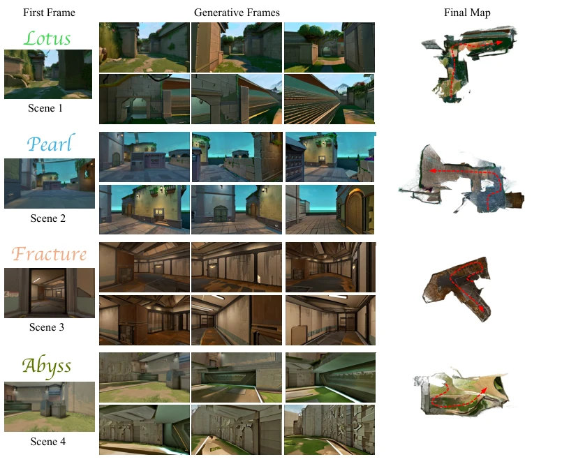
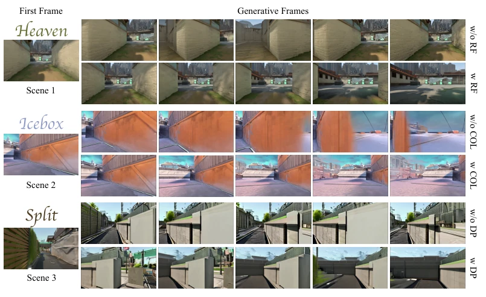

这篇论文试图用“生成式视频模型”造“可玩地图”，思路挺野。VALERANT 把预训练的动作条件世界模型（WM）强行改造成能决策的 WAM，不用训练就能从单图生成 3D 地图，这点确实省事儿，省去了传统 3D 建模的繁琐。但吐槽点也很明显：它依赖 SLAM 重建，而 SLAM 在生成视频上容易漂移，虽然加了鲁棒模块，但本质还是“猜”出来的几何，物理一致性存疑，可能经不起复杂物理引擎的考验。而且只在 VALORANT 截图上跑，泛化性是个问号，换个画风可能就不灵了。总的来说，是 AIGC 在 3D 游戏资产生成上的有趣尝试，成功 bridging 了视频生成与 3D 几何，但离真正的“物理引擎”还差口气，属于“看着像那么回事”的阶段性成果。
—
研究动机Motivation
现有世界模型（WM）多停留在 2D 视觉模拟，如 Oasis (Decart et al., 2024) 和 MineWorld (Guo et al., 2025)，无法提供游戏所需的持久 3D 几何。在自动驾驶中，物理环境独立存在，但游戏世界需由模型实例化。Wang et al. (2026a) 定义的 WAM 虽能决策，但缺乏显式空间表示。现有方法结合外部策略，但无法直接生成可导航的 3D 地图。本研究旨在填补视觉模拟与显式 3D 实例化之间的鸿沟，解决游戏地图创建依赖人工、成本高的问题，实现从单图到可玩空间的自动化。特别是针对 3D 游戏需要显式几何支持移动和交互的需求，现有视频生成模型无法提供空间表示，这是核心痛点。
Figure 1: Overview of VALERANT. Starting from a single input image, a virtual agent queries the WM with candidate actions to generate alternative what-if video rollouts. Visual SLAM recon- structs the corresponding 3D geometry, and an exploration policy selects the branch with the highest mapping utility. The selected observations are committed to a persistent point-cloud map, which is iteratively expanded into the final 3D game map. The upper panel provides a schematic illustration of the pipeline, while the lower panel demonstrates the process using an example scene.
实验Experiments
使用 VALORANT 游戏截图作为输入，基线为 HY-World 2.0。指标采用 VLM 评估的真实性分数（AS）和人类偏好（UP）。结果显示 VALERANT 在 AS 上达 80%，UP 达 83.33%，显著优于基线。消融实验表明，鲁棒地板估计（RF）防止了地面漂移导致的碰撞误判，互补碰撞检测（COL）避免了穿墙，死胡同回退（DP）解决了局部停滞。定性结果展示了从单图到完整 3D 地图的平滑过渡，证明了框架在自动地图生成上的有效性。实验还验证了在几何漂移和视觉幻觉下的鲁棒性，尽管是单目 SLAM，但通过相对高度归一化等手段提升了稳定性。
—

Figure 2: Qualitative Results of VALERANT for Single-Image 3D Game-Map Generation. Each pair of rows presents one scene. The leftmost column shows the input first frame, the middle columns show six generated frames sampled along the agent’s trajectory, and the rightmost column presents a top-down view of the final reconstructed map with the agent’s trajectory overlaid.

Figure 3: Qualitative ablation of the robust exploration modules. Each pair of rows presents one scene and isolates the effect of a single module by comparing generated frames without (top) and with (bottom) that module. RF, COL, and DP denote robust floor estimation, complementary colli- sion detection, and dead-pocket rewind, respectively.